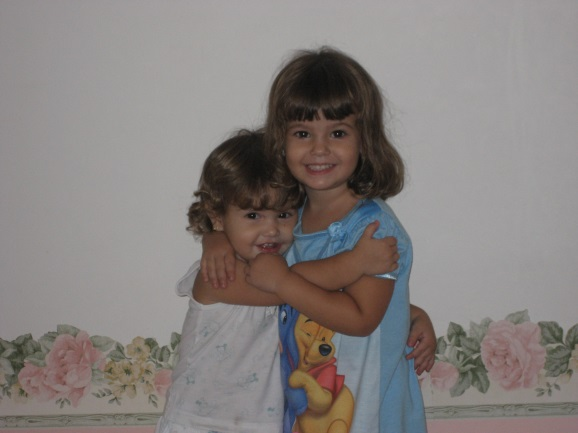
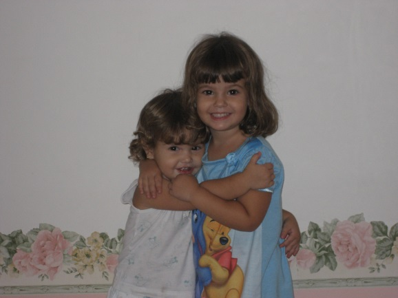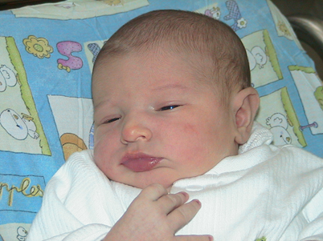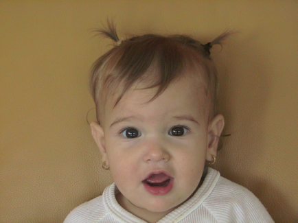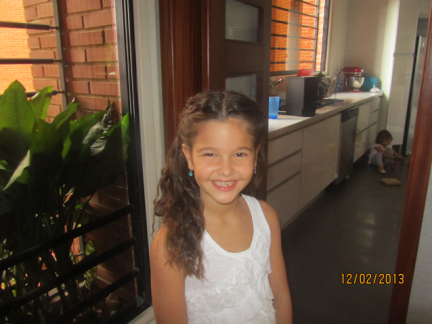
Vivi nació 18 meses después que yo, el 7 de enero del 2005. Mis padres se enteraron que era una niña ese mismo día, pues quisieron que sea sorpresa. Sorpresa habrá sido para mí saber que ya no sería única hija.
Hay una anécdota con respecto al nombre de Vivi: mis padres antes de su nacimiento, como es normal, habían propuesto varios nombres en caso que sea hembra o varón. Entre los nombres de niñas, se encontraban; Susan, Naomi y Vivian. Mis padres también habían acordado preservar las células madre que se encuentran en el cordón umbilical. Mi hermana nació a las 3:15 de la tarde y como a eso de las 4 de la tarde llegó la gente de preservación de células madre a recoger la muestra del cordón y lo primero que hicieron fue preguntar ¿cuál es el nombre de la niña? Mis padres no habían decidido todavía, y mi papá les explicó que ellos acostumbran a poner el nombre bajo los lineamientos religiosos y eso debe hacerse en una sinagoga y que tan pronto la nombren se lo harían saber. El señor no aceptó la condición y dijo que era necesario tener el nombre de inmediato. Mi papá al ver que no tenía opción le dijo que se llamaría Susan.
Mi mamá se encontraba en el cuarto con mi abuela Elena, mis tías Vicky y Verónica (hermanas de mi abuela) y mi bisabuela Magda. Mi papá entra al cuarto y le comunica a la comitiva que ya la niña tiene nombre; “se llama Susan”. Mi mamá no podía creer que mi papá le pusiera el nombre sin consultarlo con ella (aunque el nombre le gustaba). Lo que no le gustó fue la reacción de la familia presente, especialmente la de mi bisabuela, la que no entendía el nombre (pues ella es húngara y no hablaba bien el español) entonces mi abuela Elena le repetía una y otra vez el nombre, hasta que se lo dijo en húngaro y sonaba horrible (YUYI) y mi mamá le agarró idea al nombre y ya no quería que se llamara así.
Pasó una semana y mi hermanita, todavía no tenía nombre (excepto, en los papeles de la compañía de preservación de las células). Mi mamá quería que se llamara Naomi y mi papá Vivian. Mi mamá tratando de encontrar una solución salomónica, propuso ponerle el nombre de su suegra (mi abuela Sarina). Pero Sarina a mi mamá no le gustaba, y pensó que ella en hebreo se llama Sara, así que propuso ponerle ese nombre con el beneplácito de mi papá. Cuando le comentaron a mi abuela que le pondrían su nombre, ella dijo; “pero mi nombre en hebreo es Shulamit” Al escuchar ese nombre mi mamá dijo: “bueno se quedará mi suegra sin ser nombrada” Al final todos sabemos que terminó llamándose Vivian Naomi, pues eran los dos nombres que a mis padres les gustaba.
Mi mamá quedó complacida con el nombre, especialmente porque le gusta el significado (traducción hecha sólo por ella) “Vida Hermosa”. Y realmente así es la vida de mi hermana.
Mi mamá sufrió mucho con Vivi, ya que no quiso chupar del pecho de mi madre, casi desde que nació tuvo que tomar fórmula, y nunca chupó chupón. Menos mal que no era llorona.
Vivi fue una bebe muy buena, siempre me seguía y se dejaba hacer todo lo que a mí me provocaba hacer con ella (esto lo sé ya que mi mamá me enseñó varias fotos en las que me veo siempre montada encima de mi hermanita)
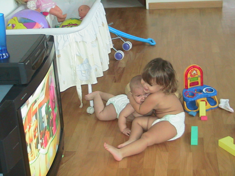 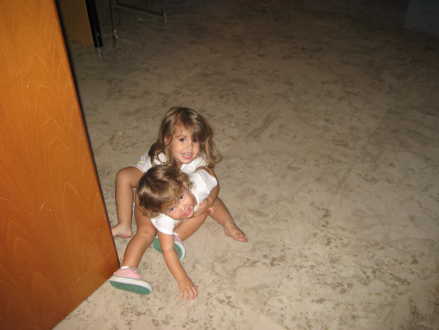 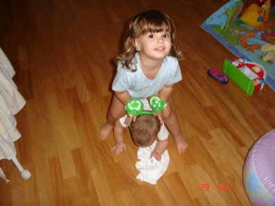
Vivi fue muy precoz, gateó a los 5 meses y a los 9 meses daba sus primeros pasitos caminando finalmente exactamente cumpliendo 10 meses de edad.
Al año exacto, en enero del 2006 entró a Tip-tipot y jamás lloró por separarse de mi madre.
Vivi es una niña muy alegre y desenvuelta. Mi mamá dice que era una niña muy fácil, pues todo le gustaba hacer, no pedía nada y jugaba siempre ya sea sola o acompañada. También fue muy atrevida, a la edad de 7 años pidió a mi mamá ir al campamento de Mi Guarimba y después de mucho pensarlo, mi mamá accedió y la niña fue, y no lloró ni en la despedida, ni durante el campamento, nunca. ¡Es una macha! Participó en ese campamento cuatro temporadas seguidas, y dice que ha sido la mejor experiencia en su vida. De hecho el año pasado fue al campamento de verano Blue Star conmigo en Carolina del Norte, y a mí me dijo, que se queda mil veces con Mi Guarimba.
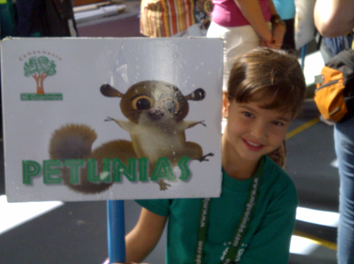
Mi hermana ha estudiado toda su vida en Hebraica, exceptuando segundo grado que lo cursó en el colegio Sinai. Y le encanta su colegio. Ella en las vacaciones largas, solía decir que extrañaba el colegio y que ya quería que empezara (¿qué niña prefiere estar en el colegio que disfrutando de sus vacaciones?)
Le encantan los deportes y ha practicado varios: Natación (estando en el equipo), Gimnasia (también formando parte del equipo), Tenis y fútbol.
¡Le encanta bailar! Todo el día baila, desde chiquita formó parte del grupo de danza con el profesor Luis Charama y siempre la ponían en posición privilegiada pues bailaba con mucha gracia. Siempre está creando coreografías ya sea conmigo y con Analy o con sus amigas.
Hoy
día teniendo 13 años cursa 1er año de bachillerato y por ahora
hace lo que siempre ha hecho “Vivir la vida de manera hermosa”.
MI HERMANA Y YO
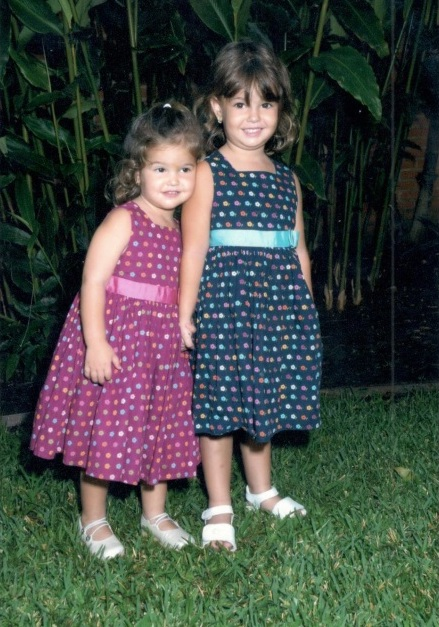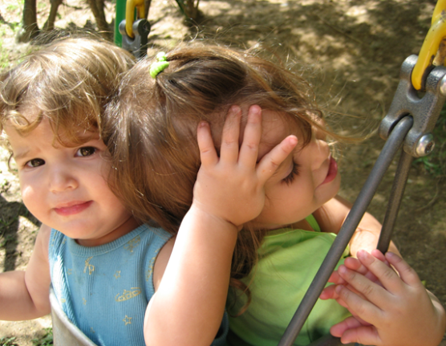
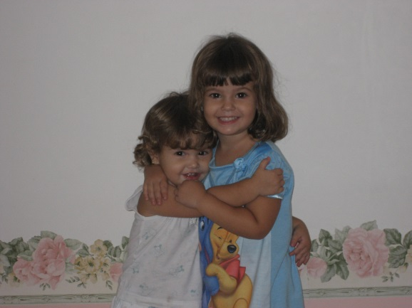
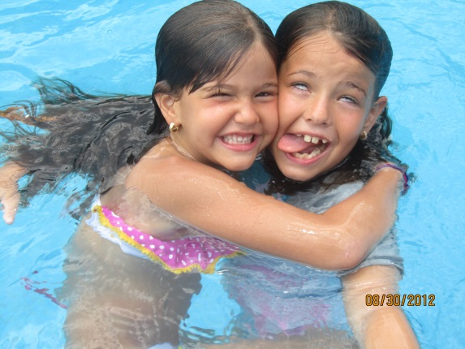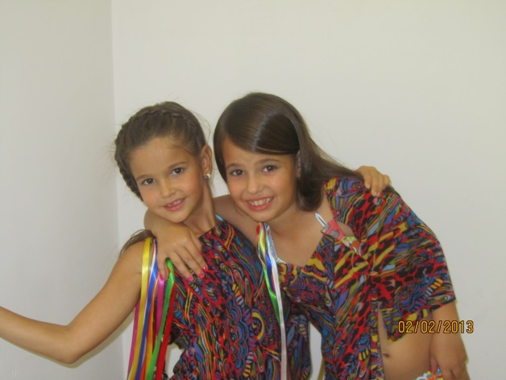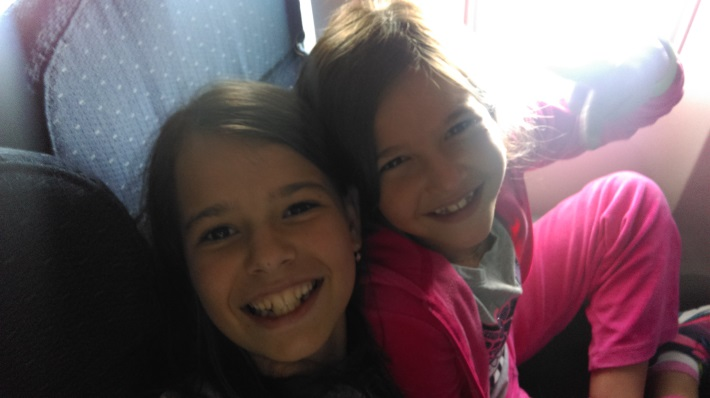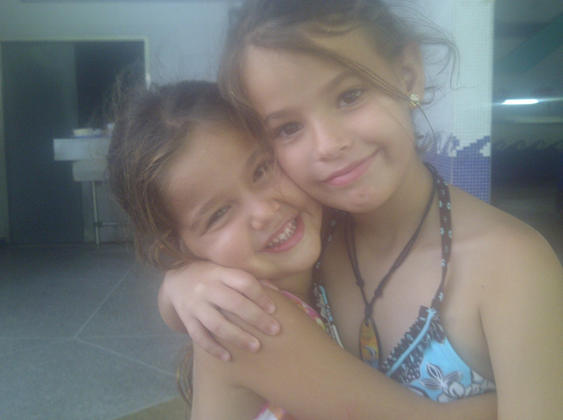
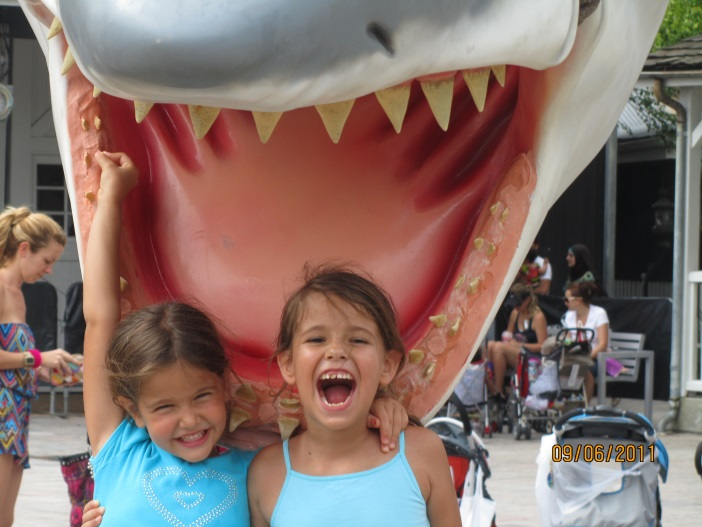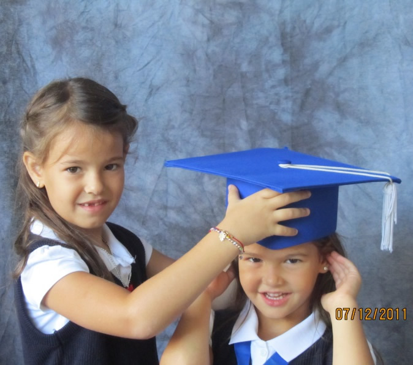
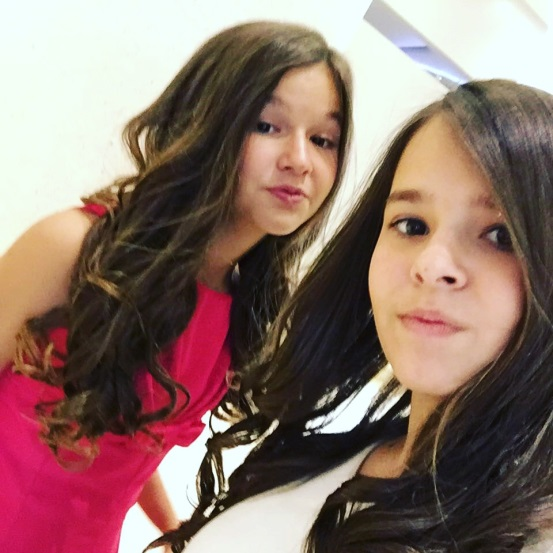
DOCUMENTOS
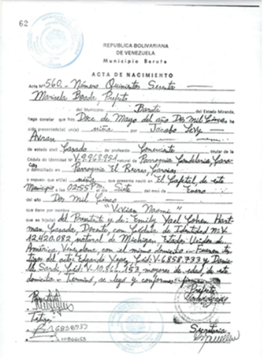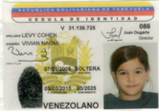